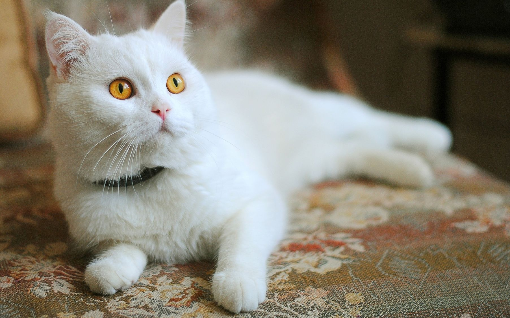
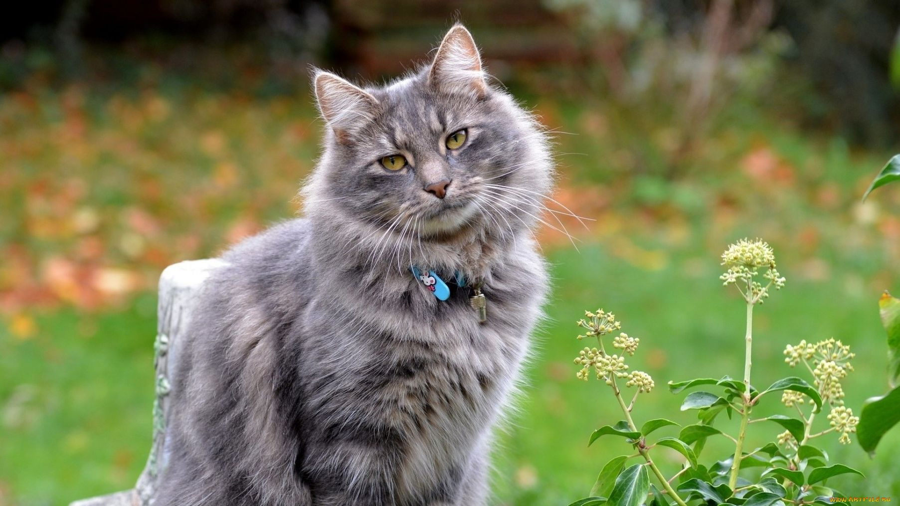
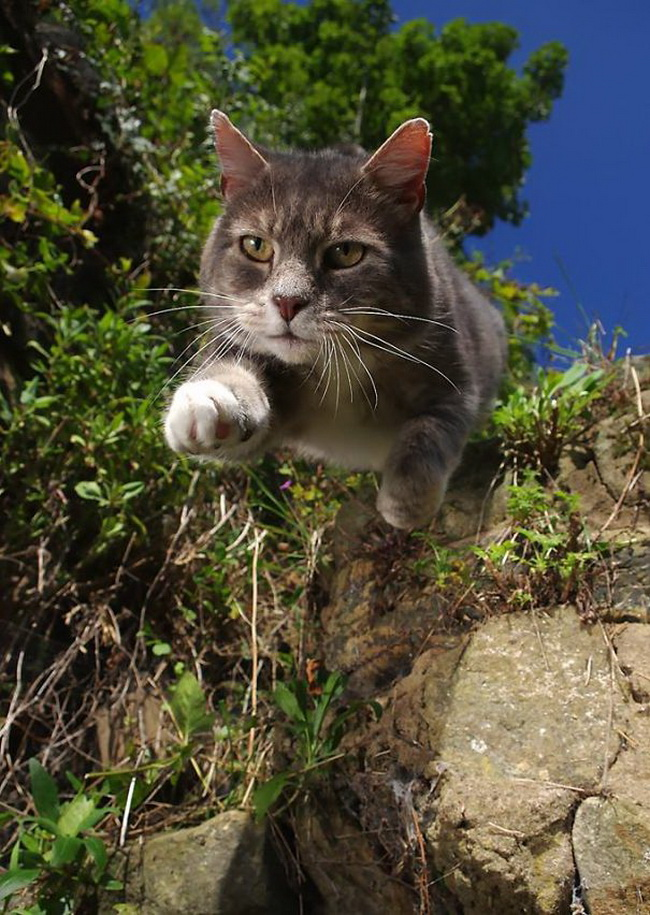

Cats store 4 U!

A Brief History of Cats
- The history of domestic cats started in ancient Egypt 4000 years ago when the African wild cat was domesticated to control vermin (small animals that are considered harmful to plants or other animals).
- Since these first cats helped control the rat population, which reduced diseases and deaths among the Egyptians, they became a sacred animal and were worshipped like gods.
- Later on, cats were sold to the Greeks and Persians. In 500 BC, the first domesticated cat was given to China, where many new breeds quickly developed.
- When Christopher Columbus discovered America in the 15th century, the cats from his ships were left there and they multiplied. These cats are now known as the American Shorthair, originating from the British Shorthair which accompanied the explorers.
Some kinds of cats
Table of cat-human age comparison
| Cat | Human | Cat | Human |
|---|---|---|---|
| 1 year | 15 year | 6 years | 40 years |
| 2 years | 24 years | 7 years | 44 years |
| 3 years | 28 years | 8 years | 48 years |
| 4 years | 32 years | 9 years | 52 years |
| 5 years | 36 years | 10 years | 56 years |
Cotophoto GALERY


